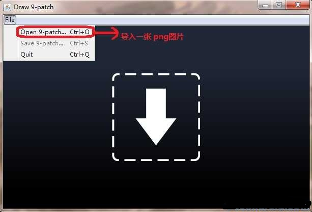
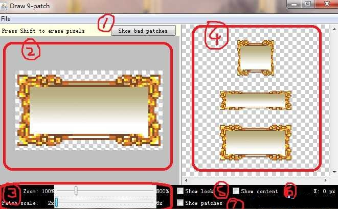
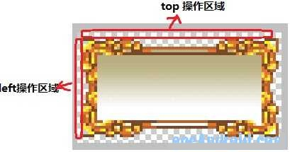

【Android2D游戏开发十一】手把手让你爱上Android “9妹”
前几天群成员讨论过关于9patch的工具，然后研究了一下，比较简单但是很实用的一个Android sdk自带工具，这里给大家做一个分享下经验！
1.什么是“9妹”(9patch)？
它是一个对png图片做处理的一个工具，能够为我们生成一个"*.9.png"的图片;
2.何为"*.9.png"?
所谓"*.9.png"这是Android os里所支持的一种特殊的图片格式,用它可以实现部分拉伸；这种图片是经过”9妹“进行特殊处理过的，如果不处理的话，直接用PNG图就会有失真，拉伸不正常的现象出现。
3.它的用途是？
说到用途，这种特殊格式的png图，我也看了网上的相关文章但都是用一个能自适应的button举例子！(如下图)清一色抄袭..
(此实例咱们直接无视掉，在后面我会给大家灌输游戏中实例)
这个例子是指当button上的字体大小改变，那么文字底下的png图也会自动适应文字。
这似乎表明做Android 软件应用 使用一些组件的的时候会时常用到；
4.那么实际在游戏中到底如何使用呢？什么情况下去使用呢？
当然啦，身为做游戏我一定要”9妹“利用在咱们游戏中才行，不然岂不是白研究了、经过思考突然想到了一些情况，并且发现“9妹”确实在游戏开发中占有一定的分量！下面我们来先熟习“9妹”工具，然后再跟大家举例，贴图来说明其用途、毕竟有图有真相 呵呵~
启动9妹：
在你Android SDK 路径下 X:\android sdk\tools ,你会找到一个 【draw9patch.bat】,没错这就是9妹啦、官方名 NinePatch ；

提示导入一张png图片，然后真正进入"9妹"的操作界面（如下图）：

序列 ① ：在拉伸区域周围用红色边框显示可能会对拉伸后的图片产生变形的区域，如果完全消除该内容则图片拉伸后是没有变形的，也就是说，不管如何缩放图片显示都是良 好的。 （实际试 发现NinePatch编辑器是根据图片的颜色值来区分是否为bad patch的，一边来说只要色差不是太大不用考虑这个设置。）
序列 ② ：区域是导入的图片，以及可操作区域。
序列 ③ ：这里 zoom：的长条bar 是对导入的图放大缩小操作，这里的放大缩小只是为了让使用者更方便操作，毕竟是对像素点操作比较费眼，下面的 patch scale 是序列 ④区域中的三种形态的拉伸后的一个预览操作，可以看到操作后的图片拉伸后的效果。
序列 ④： 区域这里从上到下，依次为：纵向拉伸的效果预览、横向拉伸的效果预览，以及整体拉伸的效果预览
序列 ⑤： 这里如果你勾选上，那么当你鼠标放在 ② 区域内的时候并且当前位置为不可操作区域就会出现lock的一张图,就是显示不可编辑区域 ;
序列 ⑥： 这里勾选上，那么在④ 区域中你就会看到当前操作的像素点在拉伸预览图中的相对位置和效果。
序列 ⑦： 在编辑区域显示图片拉伸的区域;
如何操作：
鼠标左键选取需要拉伸的像素点； shift+鼠标左键取消当前像素点。
操作区域：

大家看到导入的png图片默认周围多了一像素点，也就是这一圈一像素点就是咱们的可操作区域。但是因为下方和右方可操作区域属于可选区域，不用理会；主要大家注意Left 和 top 操作区域；
Top操作区域的一排像素点，表示横向拉伸的像素点；
Left操作区的一排像素点，表示纵向拉伸的像素点；
下图是我对图片的操作：
大家看到上方和左边的黑色像素了么？对，这些是我手动操作的地方，我这里是想让此png图像拉伸操作的时候，只是中间区域被拉伸。选择上方中间区域是为了横向拉伸的时候选取的拉伸像素点，左边则是纵向拉伸的；
那么大家现在回头看一眼，然后对比，看到区别了吧！很明显，我们没有任何操作，默认整体拉伸，那么拉伸的效果很明显的失真了...而我们指定了拉伸的像素点所以只是中间的被拉伸，图片的花边我们保留不拉伸这样看起来就好太多啦 娃哈哈。
然后通过“9妹”就可以保存出来一张“*.9.png”图片，我们放在android项目的res下的drawable下就可以拉！
现在我就可以跟大家讲下使用“*.9.png”的好处：
在我们手机游戏开发的过程中，我们最关系的是生成的安装文件、比如j2me的jar包，塞班的sis、sisx以及咱们andrid中的apk都希望打包后的包越小越好、虽然现在的手机趋向于智能了，但是毕竟手机的容量和内存还是有限、身为移动设备开发者的我们对此都很看重，那么通过"9妹"处理后的图片我们就可以省去不少的内存和容量。
1. 省精力和时间！
如果我们有一张50*50的类似上面那种带花边的png图片，那么我们在android或者大分辨率的机器上使用的画，肯定需要对其处理，那么要不就是让美工的mm们给咱们重新做一张,那么通过"9妹"处理得到的“*.9.png”就会省去美工的负担了。
2.省内存!
如果不想用代码来对其小图进行缩放来再次使用(因为考虑会失真),那么可能会多加了图片，这样一来游戏包的大小就会增加了，几K―几十K不等,而利用"9妹"处理的就省去了这些麻烦。
3.减少代码量!
有些童鞋该说啦，我用代码一样能实现(图2)的效果不失真，OK，我也知道。当初我在J2ME平台做RPG的时候也是利用设置可视区域等代码来实现的，但是如果你用“.9.png”的方式就更简单！！！
不多吹 “9妹”的好处，下面我们来看看代码如何实现此格式的方式和效果吧！
import android.content.Context;import android.graphics.Bitmap;
import android.graphics.BitmapFactory;
import android.graphics.Canvas;
import android.graphics.Color;
import android.graphics.NinePatch;
import android.graphics.Paint;
import android.graphics.RectF;
import android.util.Log;
import android.view.SurfaceHolder;
import android.view.SurfaceView;
import android.view.SurfaceHolder.Callback;
public class MySurfaceView extends SurfaceView implements Callback, Runnable {
private Thread th = new Thread(this);
private SurfaceHolder sfh;
private Canvas canvas;
private Paint paint;
private Bitmap bmp_old;
private Bitmap bmp_9path;
private NinePatch np;
public MySurfaceView(Context context) {
super(context);
this.setKeepScreenOn(true);
bmp_old = BitmapFactory.decodeResource(getResources(),
R.drawable.android_old);
bmp_9path = BitmapFactory.decodeResource(getResources(),
R.drawable.android_9path);
np = new NinePatch(bmp_9path, bmp_9path.getNinePatchChunk(), null);
// 创建一个ninePatch的对象实例，第一个参数是bitmap、第二个参数是byte[]，这里其实要求我们传入
// 如何处理拉伸方式，当然我们不需要自己传入，因为“.9.png”图片自身有这些信息数据，
// 也就是我们用“9妹”工具操作的信息！ 我们直接用“.9.png”图片自身的数据调用getNinePatchChunk()即可
// 第三个参数是图片源的名称，这个参数为可选参数，直接null~就OK~
sfh = this.getHolder();
sfh.addCallback(this);
paint = new Paint();
paint.setAntiAlias(true);
setFocusable(true);
}
public void surfaceCreated(SurfaceHolder holder) {
Log.v("android", "surfaceCreated");
th.start();
}
public void draw() {
canvas = sfh.lockCanvas();
canvas.drawColor(Color.BLACK);
RectF rectf_old_two = new RectF(0, 50, bmp_old.getWidth() * 2,
120 + bmp_old.getHeight() * 2);// 备注1
RectF rectf_old_third = new RectF(0, 120 + bmp_old.getHeight() * 2,
bmp_old.getWidth() * 3, 140 + bmp_old.getHeight() * 2
+ bmp_old.getHeight() * 3);
// --------下面是对正常png绘画方法-----------
canvas.drawBitmap(bmp_old, 0, 0, paint);
canvas.drawBitmap(bmp_old, null, rectf_old_two, paint);
canvas.drawBitmap(bmp_old, null, rectf_old_third, paint);
RectF rectf_9path_two = new RectF(250, 50,
250 + bmp_9path.getWidth() * 2, 90 + bmp_9path.getHeight() * 2);
RectF rectf_9path_third = new RectF(250,
120 + bmp_9path.getHeight() * 2,
250 + bmp_9path.getWidth() * 3, 140 + bmp_9path.getHeight() * 2
+ bmp_9path.getHeight() * 3);
canvas.drawBitmap(bmp_9path, 250, 0, paint);
// --------下面是".9.png"图像的绘画方法-----------
np.draw(canvas, rectf_9path_two);
np.draw(canvas, rectf_9path_third);
sfh.unlockCanvasAndPost(canvas);
}
public void run() {
while (true) {
draw();
try {
Thread.sleep(100);
} catch (Exception ex) {
}
}
}
public void surfaceChanged(SurfaceHolder holder, int format, int width,
int height) {
Log.v("android", "surfaceChanged");
}
public void surfaceDestroyed(SurfaceHolder holder) {
Log.v("android", "surfaceDestroyed");
}
}
下图是模拟器中的效果图、
左边是正常png的缩放不同大小的情况，右边是咱们的9妹处理过的“*.9.png”，怎么样，效果明显不一样吧！希望大家以后多多的利用“9妹”哦。